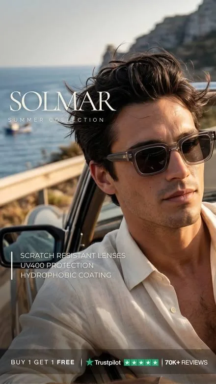
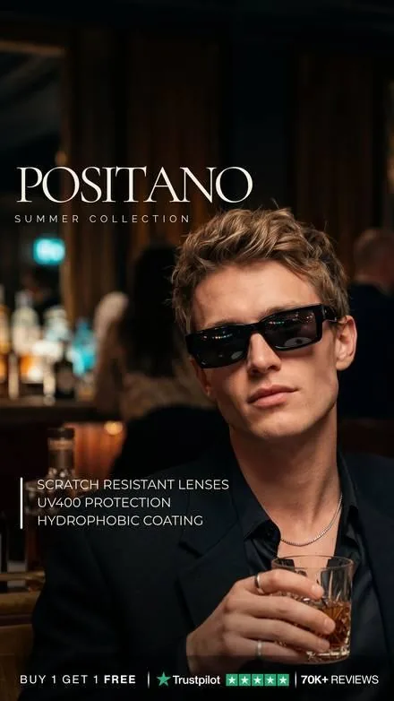
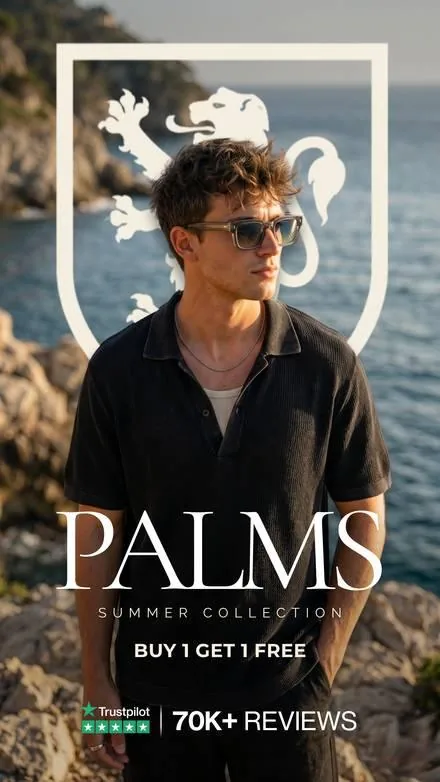
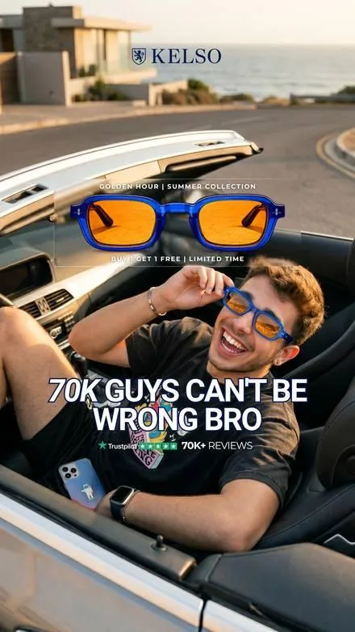
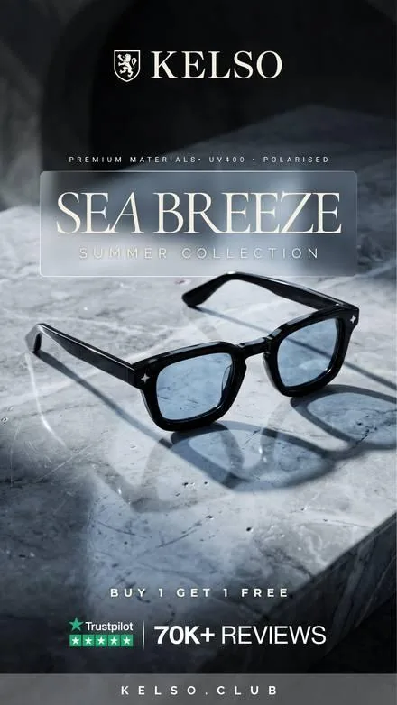
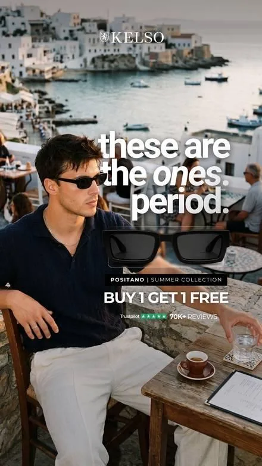
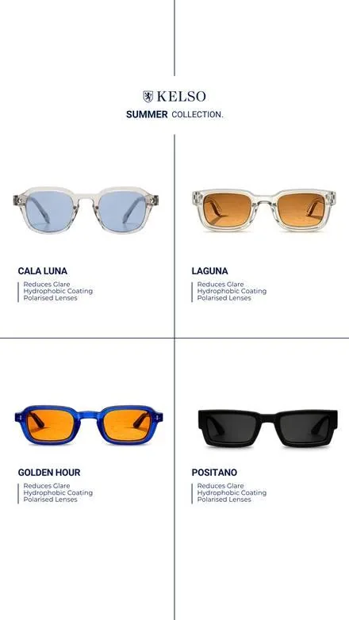

I make AI ad creative for e‑commerce brands: models, products and scenes, without a shoot. Here’s what I’ve made for another eyewear brand, and some fresh work made for VZN.
For KELSO’s Summer Collection I made a steady stream of Facebook ads: AI models wearing every frame, product stills true to each lens colour, and hook‑led ads built around one offer. Every ad ran in their campaign.
50+Facebook ads
11frames, each one accurate
0photo shoots

SolmarOn model

PositanoOn model

PalmsOn model

“70K guys can’t be wrong”Hook adCoastlineProduct still

Sea BreezeProduct still

“These are the ones”Hook ad

Collection lineupLineup
KELSO is aimed at a younger buyer. The work below is made for VZN’s.
Made for VZN
Three directions for VZN Frames.
Made fresh for this conversation, with a new face and new scenes, written in British English for the man who buys once and buys well.
01 · Static · 4:5
The Long Lunch
“Some things are worth taking your time over.”
A harbour‑side terrace in Cornwall, late afternoon. Lunch is over, nobody is in a hurry. The St Barts⁺ Safari rests on white linen beside an espresso.
For the man who buys once and buys well. A calm, product‑first still that works as a feed ad and as the first card of a carousel.
02 · Video · 9:16 · 15s
The Glare Test
“I’d stopped noticing the glare. Until it was gone.”
On a small wooden boat, he squints across bright water, puts on the Sterling, and the surface clears so you can see beneath it. End card: “Polarised. Properly.”
Shows what polarised lenses do in one moment, with no voiceover needed, so it works with the sound off.
03 · Carousel · 4:5 · 5 cards
Every Season
“Sunglasses aren’t a summer thing.”
Winter sun on a frosty walk with the dog, a spring afternoon at the cricket, a summer evening on the harbour wall, then the Safari, Sterling and Azure side by side.
Turns sunglasses into a year‑round purchase and shows the range in a single swipe.
On model
10 images
Model 01 · 4:5Long lunch on a Cornish harbour terrace, linen shirtSafari
Model 02 · 9:16Glare test on a small wooden boat, squint then clearSterling
Model 03 · 4:5Frosty morning walk with a dog, low winter sunSterling
Model 04 · 1:1Close portrait at a cricket pavilion, spring lightSafari
Model 05 · 16:9Harbour wall at golden hour, wide and cinematicAzure
Model 06 · 9:16Reading the paper at a café table outdoorsAzure
Model 07 · 4:5Country estate, tweed jacket, walking the groundsSafari
Model 08 · 1:1Laughing with a friend on a boat deckSterling
Model 09 · 9:16Walking the length of a pier, coat in the windSafari
Model 10 · 4:5Early tee‑off on a quiet golf courseAzure
Product
10 images
Product 01 · 1:1Folded on white linen beside an espressoSafari
Product 02 · 4:5On a teak boat deck with coiled ropeSterling
Product 03 · 1:1On a sun‑warmed stone harbour wallAzure
Product 04 · 9:16The three frames lined up on dark stoneSafari · Sterling · Azure
Product 05 · 4:5Macro: hinge and tortoiseshell armSafari